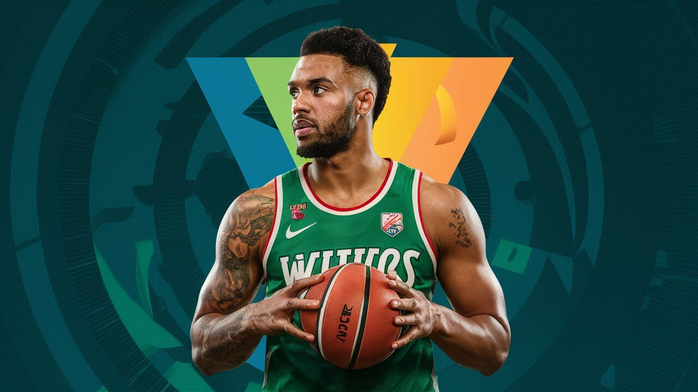

What is Handicap Betting?
Handicap betting is a popular form of betting that makes sporting events more interesting and competitive. This type of betting levels the playing field between the favorite and the underdog by adding an artificial advantage or disadvantage to one of the teams or participants.

For example, if one team is significantly stronger than the other, a handicap can add goals or points to the weaker team before the game starts. This way, the bet becomes more balanced, and the odds for both the favorite and the underdog become more attractive. At "WinStake," we offer a variety of handicap bets on different sports events. This allows our users to enjoy betting to the fullest and increase their chances of winning. Whether you are an experienced bettor or a newcomer, our handicap bets will help you find interesting and profitable betting options.Join "WinStake" and try your hand at handicap betting today!
Bookmakers understand the power dynamics in sports. For a match between a clear favorite, such as a tournament leader, and an underdog, such as a team fighting for survival, the odds for the favorite’s victory are usually very low (often 1.3 or less), sometimes even as low as 1.01 when the difference between the teams is significant. This means that betting 100 euros would return just 1 euro if the bet wins.
In these situations, you can make the betting more interesting by introducing a handicap. This involves giving the favorite a deliberate disadvantage or giving the underdog a deliberate advantage. This way, the match becomes more competitive, and the odds for both teams become more appealing.

At "WinStake," we provide a range of handicap betting options
for various sports events. This allows our users to enjoy a more
engaging betting experience and potentially higher returns.
Whether you are an experienced bettor or just starting out, our
handicap betting options offer exciting and profitable
opportunities.
Join "WinStake" today and discover the thrill of handicap
betting!
The most important concept in handicap betting
Handicap betting is designed to level the playing field between two teams or participants of differing abilities. This betting style introduces a theoretical advantage or disadvantage to even out the competition. By understanding and utilizing handicap betting, you can enhance your betting strategy and find value in matches that might otherwise seem uninteresting due to the disparity in team strengths.
In a typical scenario where one team is a clear favorite and the other is an underdog, the odds offered for the favorite’s win are usually very low. This can make betting on the favorite less appealing due to the minimal returns. Handicap betting addresses this by adding a hypothetical disadvantage to the favorite or an advantage to the underdog. For example, in football, a favorite might start with a -1.5 goal handicap, meaning they need to win by at least 2 goals for the bet to be successful. Conversely, the underdog might be given a +1.5 goal advantage, making the bet successful if they win, draw, or lose by just one goal.
The primary advantage of handicap betting is the potential for higher returns. By balancing the odds, bookmakers make matches more competitive from a betting perspective. This increased competitiveness allows for more strategic betting, as the adjusted odds provide opportunities to bet on outcomes that might offer better value than straightforward win/lose bets. This can be particularly useful in matches where the outcome seems almost certain, making handicap betting an essential tool for savvy bettors looking to maximize their returns.
Handicap betting requires a deeper analysis of the game, as bettors need to consider not just who will win, but by how much. This involves evaluating factors such as team form, head-to-head statistics, player injuries, and even weather conditions. By delving into these details, bettors can make more informed decisions and identify potential mismatches in the handicap set by the bookmakers. This analytical approach not only enhances your betting strategy but also enriches your understanding of the sport itself.
Handicap betting is not limited to just one form. Asian Handicap and European Handicap are two popular types, each with its unique rules and strategies. The Asian Handicap, for instance, often eliminates the possibility of a draw, offering a refund if the match ends in a tie. This reduces the risk and can make betting more attractive. The European Handicap, on the other hand, maintains the possibility of a draw, providing different strategic opportunities. Understanding these variations allows bettors to choose the most suitable option for each match, further enhancing the betting experience.
One of the most significant benefits of handicap betting is the increased engagement and excitement it brings to watching sports. Even matches that might seem predictable become more thrilling when you factor in the handicap. This added layer of complexity keeps bettors invested throughout the entire game, as the outcome remains uncertain until the final whistle. At "WinStake," we believe that this excitement is a crucial part of the betting experience, and our range of handicap betting options is designed to ensure that every match is as engaging as possible.


Types of Bets: Exploring Your Options
Understanding the various types of bets available can significantly enhance your sports betting experience. Each type offers unique advantages and can be strategically used based on your knowledge and preferences. Here’s a breakdown of the most common bet types you’ll encounter on "WinStake":
What is Handicap Betting? 6 Key Points to Understand
Leveling the Playing Field
Enhanced Odds
Types of Handicaps
Strategic Betting
Increasing Engagement
How to Bet on Hockey: total over